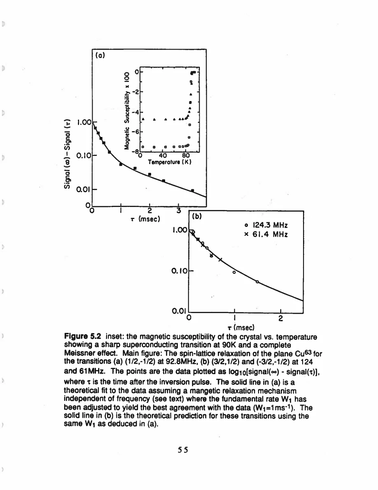

Pennington · supplied source 1989 · chapter unit
5. Spin 3/2 recovery and the fast magnetic field
Selective inversion excites fixed nuclear population modes; a shared W₁ across transitions tests the mechanism.
The question: Why can one environment have several recovery exponentials?
Before you start: the terms you need
- Plane Cu / chain Cu: the two crystallographic copper sites in YBCO
- EFG: electric field gradient, which couples to a nuclear quadrupole moment
- Magnetic shift: the field-proportional frequency change after quadrupole contributions are separated
- W₁: the thesis’s elementary satellite population-transition rate, not automatically 1/T₁
- Redfield contribution: echo decay generated by the fluctuating fields also responsible for population recovery
- Transferred hyperfine coupling: a nuclear spin senses electronic spins through orbital mixing or intervening atoms
See → explain → check
Follow the idea in 3 pictures.
Picture 1 / 3
Three population modes
Look for: Read the rate weights rather than counting sample components.
Swipe across the picture to read every label, or enlarge it below.
- Slow
- Middle
- Fast
Source magnetic fast-motion limit; these are nuclear modes.
One spin 3/2 site has several allowed recovery modes.
Check the original: PDF p. 128 · PDF p. 130
Picture 2 / 3
Preparation changes weights
Look for: The same W₁ enters different predicted curves.
Swipe across the picture to read every label, or enlarge it below.
- Central inversion
- Satellite inversion
Normalized deviations, not fitted experimental traces.
Central and satellite inversions need different formulas.
Check the original: PDF p. 51 · PDF p. 130
Picture 3 / 3
Test before interpreting
Look for: Compare several frequencies and transition types.
Swipe across the picture to read every label, or enlarge it below.
- 61 /93 /124 MHz
- Transition-specific fits
- Shared W₁
Frequency independence is established over this measured range, not over every frequency.
Agreement with one W₁ constrains a fast magnetic mechanism.
Explain it back.
Try answering aloud before opening the explanation.
Does a 0.1 slow weight imply 10% of the material is a slow electronic phase?
No. It is the weight of a nuclear relaxation eigenmode for this pulse preparation.
What evidence supports fast fluctuations?
The transition-specific recovery laws work with one W₁ across approximately 61–124 MHz.
Go deeper Follow the full argument
Preparation selects the recovery law
The recovery experiment selectively inverts one transition, waits a variable time and reads its population difference using an echo. The measured deviation from the fully recovered signal is fitted to the law appropriate to that transition. Four nuclear levels have three nontrivial population-relaxation modes. In the thesis’s fast magnetic-relaxation limit, their rates are 2 W₁/3,2 W₁ and 4 W₁. Central-transition inversion weights the slow and fast modes 0.1 and 0.9; satellite inversion also includes a 0.5 weight at 2 W₁. This is a property of the level scheme, pulse selectivity and allowed transition probabilities. It does not require two or three physically separated electron populations. A curve fit with an arbitrary stretched or single exponential would discard that diagnostic nuclear structure.
PDF p. 50 · PDF p. 51 · PDF p. 127 · PDF p. 128 · PDF p. 129 · PDF p. 130
A shared rate tests the spectral assumption
For plane Cu with H₀∥c at 100 K, the central line near 92.8 MHz and satellites near 61.3 and 124.3 MHz follow their different predicted recovery shapes with one W₁. The agreement supports a magnetic fluctuating-field mechanism rather than an electric-quadrupole mechanism, within the stated theory. It also supports frequency-independent relaxation across the transition range, as expected when fluctuations are much faster than the nuclear precession scale. This observation does not directly resolve a 10⁻¹⁵ s motion in real time; that correlation scale is later inferred with hyperfine and local-moment assumptions. The acquisition uses a sufficiently long reference delay and interleaves points to reduce incomplete recovery and drift. The resulting mechanism test rests on comparing several preparation/observation pairs, not merely on a visually smooth decay.
PDF p. 51 · PDF p. 52 · PDF p. 67 · PDF p. 82 · PDF p. 87 · PDF p. 90
Read rates with directions and conventions
Table 5.3 reports W₁ rather than the inverse of a universal single-exponential T₁. At 100 K plane W₁a=W₁b=4.7±0.3 ms⁻¹ and W₁c=1.05±0.1 ms⁻¹, giving a ratio about 4.48. The table also lists fluctuating-field-component products inferred by combining directional rates; their anisotropy near 7.9 is a different ratio and must not be substituted for W₁a/W₁c. The chain rates 1.1±0.1,0.9±0.1 and 0.8±0.1 ms⁻¹ are treated as approximately isotropic within the source’s experimental uncertainty. At 200 K they are near 1.8–1.9 ms⁻¹, while plane rates grow more weakly. Appendix D distinguishes high-field selective recovery from zero-field NQR. Plane axial NQR can have a single recovery rate 2 W₁; chain nonaxial EFG requires a different eigenstate and rate analysis. Matching nuclei does not guarantee matching fitted rate definitions. The inversion preparation and observed transition should therefore accompany any quoted relaxation number.
PDF p. 52 · PDF p. 58 · PDF p. 68 · PDF p. 69 · PDF p. 70 · PDF p. 71 · PDF p. 129 · PDF p. 130 · PDF p. 131 · PDF p. 132
Translate the mathematics Essential equations and their meaning
R_central(t) = 0.1 e^(−2 W₁t/3) + 0.9 e^(−4 W₁t)
Symbols: R: normalized deviation from equilibrium after selective central inversion; W₁: satellite transition rate
Spin-3/2 recovery in the fast magnetic-relaxation limit; do not replace this with a generic single exponential.
R_satellite(t)=0.1 e^(−2 W₁t/3)+0.5 e^(−2 W₁t)+0.4 e^(−4 W₁t)
Symbols: R_satellite: normalized deviation after selective inversion/observation of a satellite
Applies under the same fast magnetic population-relaxation assumptions as the central law.
Read the evidence Guided original source pages

PDF p. 67

PDF p. 58
What the evidence supports—and where it stops
- A magnetic mechanism test depends on pulse selectivity and the stated level/rate assumptions.
- Normal-state inferred correlation times are model outputs, not direct clock measurements.
Source version, reading coverage and preservation
All 146 scanned pages rendered and locally OCR-recognized with Windows.Media.Ocr. Research prose of PDF 13–139 read in full; source-specific formulas and selected complete page figures inspected individually. PDFpage=printedpage+12.
Reviewed body pages: 13, 14, 15, 16, 17, 18, 19, 20, 21, 22, 23, 24, 25, 26, 27, 28, 29, 30, 31, 32, 33, 34, 35, 36, 37, 38, 39, 40, 41, 42, 43, 44, 45, 46, 47, 48, 49, 50, 51, 52, 53, 54, 55, 56, 57, 58, 59, 60, 61, 62, 63, 64, 65, 66, 67, 68, 69, 70, 71, 72, 73, 74, 75, 76, 77, 78, 79, 80, 81, 82, 83, 84, 85, 86, 87, 88, 89, 90, 91, 92, 93, 94, 95, 96, 97, 98, 99, 100, 101, 102, 103, 104, 105, 106, 107, 108, 109, 110, 111, 112, 113, 114, 115, 116, 117, 118, 119, 120, 121, 122, 123, 124, 125, 126, 127, 128, 129, 130, 131, 132, 133, 134, 135, 136, 137, 138, 139. Acknowledgments and biography are not teaching material. Bibliography not independently verified against external publications. Mathematical derivations are summarized at final-result level; not every algebraic line independently reconstructed.
Source SHA-256: 85b6d3c8d20ccc23476bf72473860248d5228e16892afefa8dec6c7054d43c26. Original file bytes preserved locally, and in this room’s original download.
Thesis - Pennington - 1989 - Single crystal NMR of high temperature superconductors.pdf